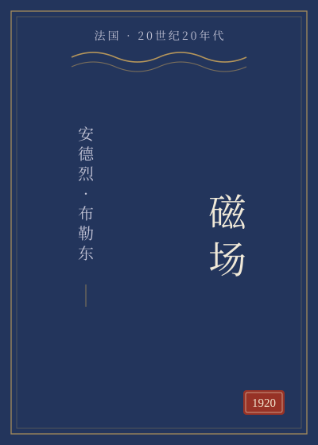
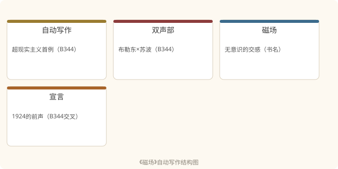

磁场
一、基本信息
| 作者 | 安德烈·布勒东 |
|---|---|
| 成书/出版 | 1920年（Britannica B344：Les Champs magnétiques (1920)——with Philippe Soupault——'the first example of the Surrealist technique of automatic writing'） Andre Breton — Encyclopaedia Britannica（百科全书） |
| 国别/地区 | 法国 |
| 时代 | 近代 · 20世纪20年代 |
| 体裁 | 散文诗集（合作） |
| 语言 | 法语 |

《磁场》自动写作结构图（主题·结构图）
二、创作背景
Britannica（B344）：与苏波合著——'the first example of the Surrealist technique of automatic writing'（超现实主义自动写作的首例）。
Britannica（B344）：1919年与阿拉贡、苏波创办 Littérature 杂志——本作为其直接产物。
Britannica（B344）：1924宣言定义超现实主义——'pure psychic automatism'——本作为其先声。
三、内容脉络
（通说待核——B344未载篇目）轮流自动写作的章节：梦境、幻觉与都市流动。
（通说待核）'磁场的领域'：无意识与外部世界的交感。
四、主要人物表
| 人物 | 身份 | 说明 |
|---|---|---|
| 双声部'我' | 布勒东/苏波 | （B344：with Philippe Soupault） |
五、主题与艺术特点
- 自动写作的开端（B344：first example）。
- 无意识的磁力学（书名语境——通说待核）。
- 宣言之前的方法实践（B344：1924宣言交叉）。
六、影响与评论
- Britannica：'the first example of the Surrealist technique of automatic writing'（B344）。
Andre Breton — Encyclopaedia Britannica（百科全书） - Britannica：1924《超现实主义宣言》定义（B344 交叉）。
Andre Breton — Encyclopaedia Britannica（百科全书）
七、阅读建议
难点
- 自动写作的语流。
- 合作无署名（通说待核）。
- 《磁场》中译名（《磁场》/《磁力场》两说——通说待核）。
- 法文原版（公有领域状态待核）。
超现实主义源头文本；配合《宣言》阅读。
八、待核实
- 章节结构核对（通说）。
- 1920年出版细节待核。
- '合作'分工方式待核。